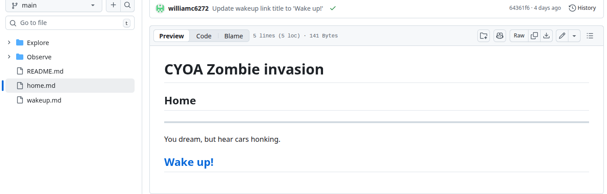

The prompt for this project was to create a Choose Your Own Adventure story using GitHub where each part of the story was in a separate file. We had to connect the files using hyperlinks so readers could click choices and move to different outcomes. The goal was to organize the files correctly, make sure all the links worked, and create multiple story paths.
This project required a clear plan because we had to map out the different story paths and decide how each file would connect before we started building it. We followed our plan to organize the files and link each choice to the correct page so the story would flow properly. However, we struggled at times because some links didn’t work, and we had to go back, check our file names and paths, and fix broken connections.
Preview of the Project